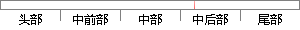

arm-none-eabi-gcc -v
片段位置图

相似结果
相似片段：arm-linux-gcc错误提示要比arm-none-eabi-gcc详细 2009-07-03 14:56:33 ...v3_0 -I/vobs/ecos/ecos-3.0/packages/redboot/v3_0/src -I/vobs/...
| 标题 | 《arm-linux-gcc错误提示要比arm-none-eabi-gcc详细-gliethttp-...》 |
| 对比库 | PaperRater云论文库 |
| 网址 | http://blog.chinaunix.net/uid-20564848-id-73763.html |
| 相似率 | 100% （严重抄袭） |